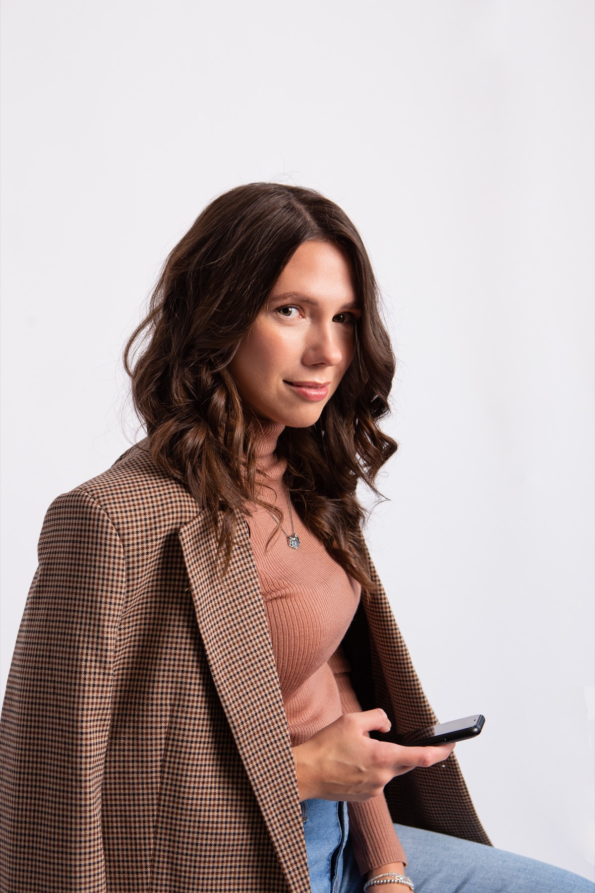
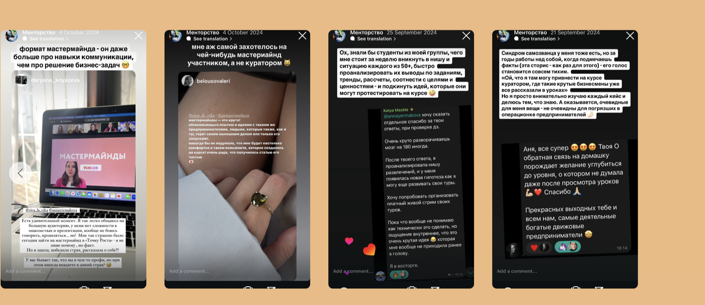
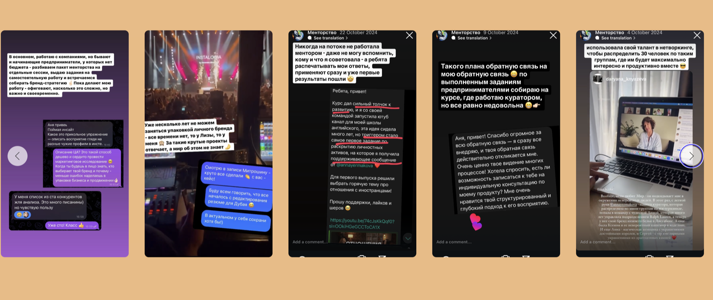
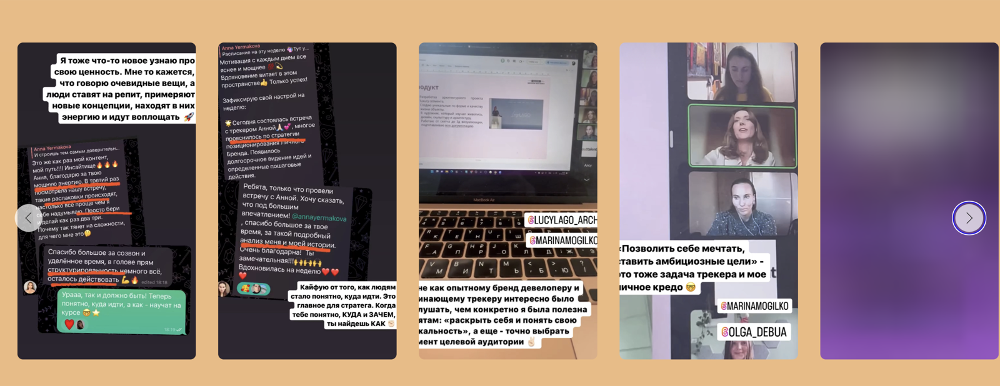
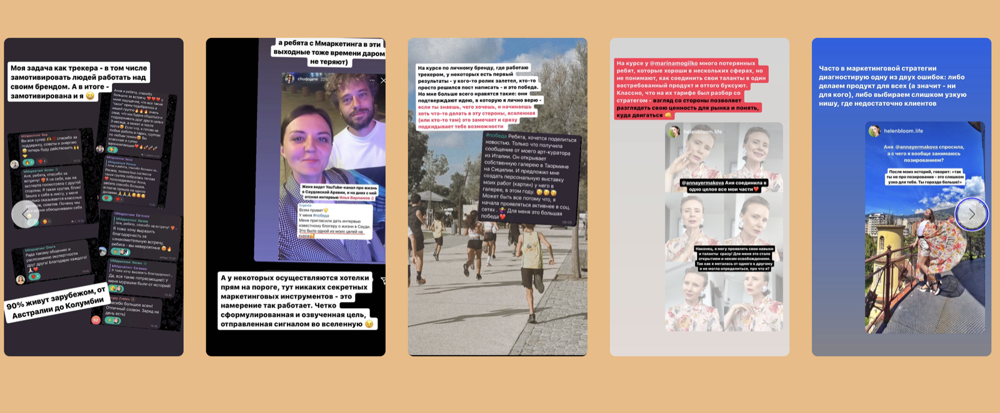
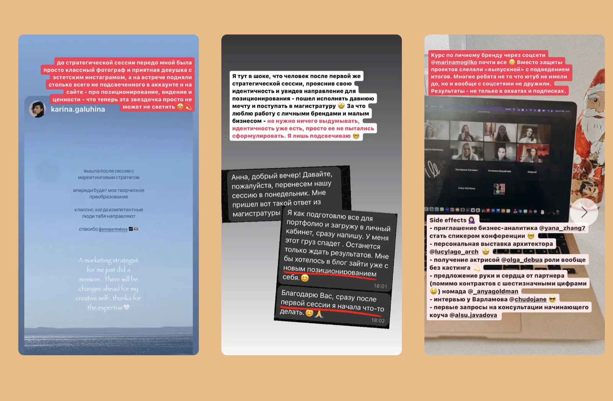
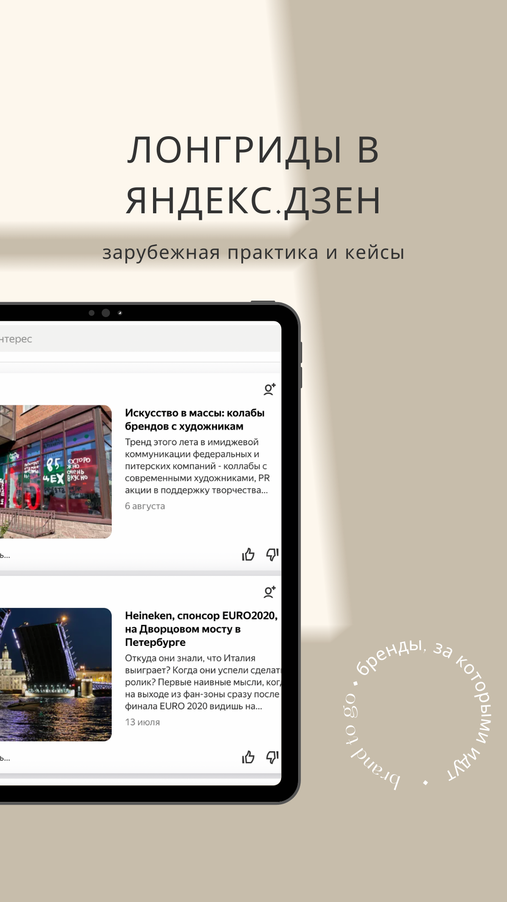
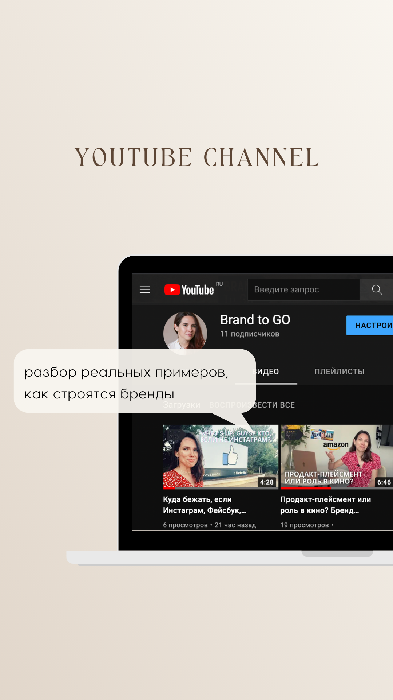

Identity
Находим, кто вы сейчас, что уже закончилось и вокруг какой новой идентичности может строиться бренд.
1:1 сопровождение
Для предпринимателей, экспертов и креативных людей, которые уже выросли из старой роли и хотят собрать личный бренд вокруг живого человека, а не только вокруг навыков.
Проблема не всегда в контенте. Иногда вы слишком долго жили как эксперт, руководитель, эмигрант, родитель, функция, но давно не спрашивали себя: кто я теперь и как хочу быть видимым?
Когда это про вас
Подход
Находим, кто вы сейчас, что уже закончилось и вокруг какой новой идентичности может строиться бренд.
Собираем авторский взгляд, темы, язык и историю, которые нельзя спутать с очередным экспертным шаблоном.
Определяем сегмент, роль, продуктовую логику и формулировки, по которым вас считывает рынок.
Фиксируем форматы, ритм и опоры, чтобы публичность поддерживала жизнь и бизнес, а не съедала их.

Об эксперте
Бренд-стратег с 20-летним опытом, предпринимательница, автор курсов по брендингу и личному бренду, создательница Brand to GO и проекта «Сарафан». Я работала с Heineken, «Макфа», Herbalife, «Островок» и десятками других брендов, а в личной практике соединяю стратегию, идентичность и проявленность.
«Я помогаю людям не выдумывать образ, а увидеть уже существующую силу, назвать ее и перевести в бренд, который наконец им соответствует».
Что меняется после работы
Понимание своей идентичности, роли, сегмента и того, что именно вы хотите нести в мир.
Формулировки, продуктовая логика и план, по которым вас легче считывать, выбирать и рекомендовать.
Не «больше контента», а более точный голос, новые форматы и спокойная регулярность без насилия над собой.





Сигналы результата
Участница курса сформулировала личный бренд, начала вести блог уже во время работы и запустила собственный YouTube-канал.
Клиентка соединила несколько частей опыта в один образ бренда и наконец увидела, как их можно продавать рынку как цельность.
После стратегической сессии клиентка собрала новое позиционирование и сразу начала делать то, что долго откладывала.
Формат
Это не курс и не серия разговоров «про уверенность». Это плотная 1:1 работа на стыке брендинга, стратегии и identity work.


Следующий шаг
Напишите в Telegram несколько строк о том, где вы сейчас, что уже перестало работать и какой следующий уровень вы хотите собрать.
Написать в Telegram